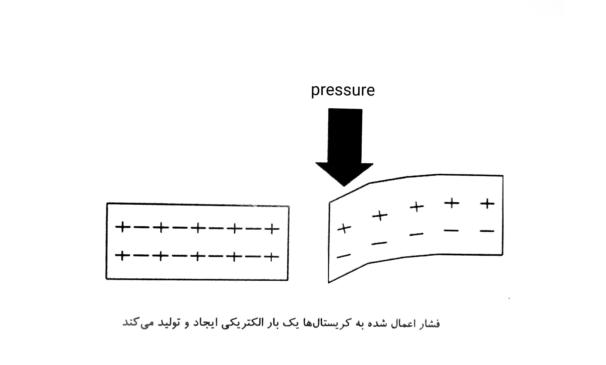
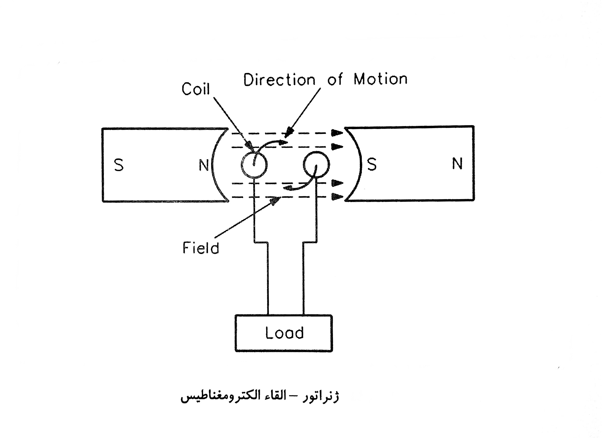
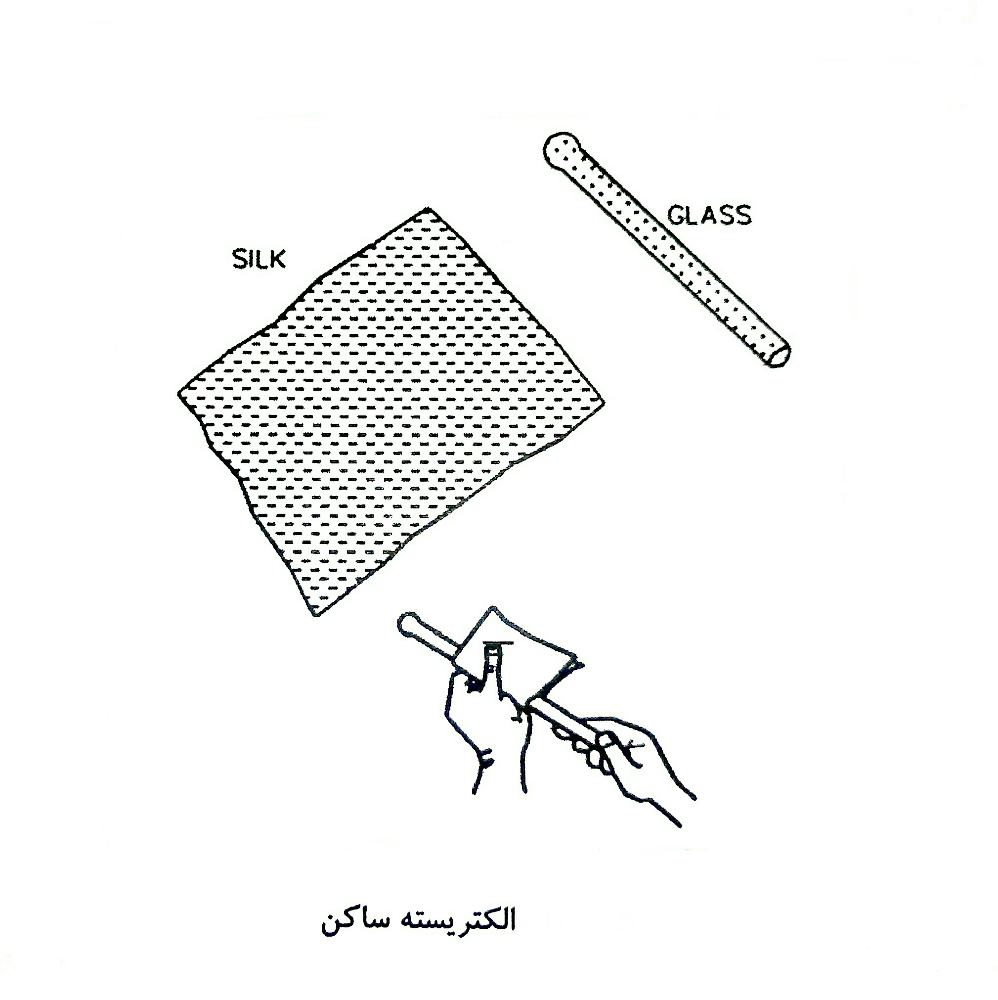

|
درباره وبلاگ موضوعات
آرشیو وبلاگ پیوندهای روزانه نویسندگان آمار وبلاگ
دیتا برق برق انقلابی ترین رشته شنبه 16 مرداد 1395 :: نویسنده : محمد لطفی
مقاومت های سیمی از پیچیدن طول معینی سیم مقاومت دار از جنس آلیاژهای مختلف نیکل بر روی استوانه ای عایق از جنس سرامیک ساخته می شود. این مقاومت عموما برای توان های بالا ( 2 تا 250 وات ) ساخته می شود. این ویژگی خاص آن ها را از سایر مقاومت ها متمایز می سازد . هم چنین انواع خاصی از مقاومت سیمی نیز برای مصارف تلرانس پایین ( تا حدود 0/05 درصد ) به منظور مقاومت دقیق ( با توان 0/25 تا 2 وات ) ساخته می شوند. مقاومت های سیمی توان 2 وات به بالا عموما در یک محفظه مانند با مقطع مربع -مستطیل شکل ساخته می شوندو به << مقاومت های آجری >> معروفند. شکل خاص محفظه ی مقاومت های آجری این امکان را فراهم می آورد که برای خنک کردن بتوان آن ها را بر روی ورقه ی فلزی خنک کننده ( رادیاتور ) قرار داد. مقاومت های آجری در مدار های صوتی و تصویری به منظور کاهش دهنده ی ولتاژ استفاده می شوند ، اما امروزه با به کار گیری نیمه هادی ها و پایین آمدن ولتاژ کار مدار ها ، از این مقاومت ها کمتر استفاده می گردد. یکی از ویژگی های مقاومت سیمی این است که به هنگام سوختن شعله ور نشده و هم چنین پس از سوختن ، کاملا قطع می شود ؛ به همین دلیل ، در بسیاری از مدار ها به عنوان مقاومت فیوزی استفاده می شود و به آن << مقاومت حفاظتی >> نیز می گویند. زیرا این مقاومت ها در حالت عادی به صورت یک مقاومت معمولی عمل می کنند و چنان چه جریان عبوری از آن از حد معینی بیشتر شود مانند یک فیوز قطع می شوند. مقادمت سیمی به سبب << یسم پیچ بودن >> دارای خاصیت << اندوکتانس >> ( خود القایی ) بوده که این نوعی عیب برای آن محسوب می شود. خاصیت خود القایی حاصل در فرکانس های بالا مشکل ایجاد می کند. البته در این گونه موارد توانسته اند با روش پیچیدن سیم به صورت دولایی یا بی فیلار (Bifilar) تا حد زیادی این مشکل را برطرف نمایند. در این روش سیم های رفت و برگشت در کنار هم قرار گرفته و عبور جریان های مساوی و مخالف هم تا حد زیادی خاصیت خود القایی را کاهش می دهد. مقاومت های سیمی دارای انواع مختلفی هستتد که اغلب براساس ساختمان داخلی آن ها نام گذاری شده اند که از جمله می توان مقاومت های سیمی با پوشش << آلومینیومی >>،<< سرامیکی >> را نام برد. مقاومت های سیمی در قالب مقاومت های متغییر نیز ساخته می شوند. از مقاومت های سیمی در مدار تحریک مولد های dc ، در مدارات راه اندازی و کنترل سرعت موتورهای ac ، کنترل جریان دیمرها و نظایر آن استفاده می شود. نوع مطلب : برچسب ها : لینک های مرتبط : شنبه 16 مرداد 1395 :: نویسنده : محمد لطفی
مقدار اهم مقاومت ها به سه روش مشخص می شوند که عبارتند از : 1-نوار رنگی 2-رمز های عددی 3-نوشتن مقدار مقاومت
1- تشخیص مقدار مقاومت با استفاده از نوار های رنگی مقاومت های توان کم دارای ابعاد کوچک هستند به همین دلیل مقدار مقاومت و تلرانس را به وسیله نوار های رنگی مشخص می کنند که خود این روش به دو شکل صورت میگیرد: الف-روش چهار نواری ب-روش پنج نوار روش چهار نواری که معمول تر هم است برای تعیین مقاومت های با تلرانس 2 درصد به بالا استفاده می شود. در این روش از دو رنگ اول برای عدد ، رنگ سوم برای ضریب و رنگ چهارم برای تلرانس استفاده می شود. چنان چه مقاومت ، رنگ چهارم نداشته باشد بی رنگ محسوب شده و تلرانس آن را 20 درصد در نظر می گیریم. روش پنج نواری نیز برای مقاومت های دقیق و خیلی دقیق (تلرانس کمتر از دو درصد) استفاده می شود. در این روش سه رنگ اول معرف عدد ، رنگ چهارم معرف ضریب و رنگ پنجم بیانگر تلرانس است. باید توجه کرد که رنگ نوار اول هرگز سیاه نیست و در ضمن اگر نوار رنگی معرف ضریب ، طلایی باشد ضریب 0/1 و اگر نقره ای باشد 0/01 است.
2-تشخیص مقدار مقاومت با استفاده از رمز حروف روش دیگری که برای نشان دادن مقدار مقاومت ها به کار می رود استفاده از حروف خاصی است که به صورت رمز مقدار و درصد تلرانس مقاومت را بیان می کند. در جدول زیر معانی حروفی که برای ضریب و تلرانس به کار می رود بیان شده است.
3-تشخیص مقدار مقاومت با استفاده از مقدار نوشته شده در این روش مقدار مقاومت و تلرانس آن مستقیما روی مقاومت نوشته می شود. نوع مطلب : برچسب ها : لینک های مرتبط : شنبه 16 مرداد 1395 :: نویسنده : محمد لطفی
مشخصات مهم مقاومت ها 1-مقدار اهمی مقاومت مهم ترین مشخصه ی یک مقاومت مقدار آن است که بر حسب اهم (Ω) ، کیلو اهم (K Ω) یا مگا اهم (M Ω) بیان می شود. مقادیر کیلو و مگا را با این ضرایب می توان به اهم تبدیل کرد: (1KΩ=10Ω,1MΩ=10Ω) 2-توان مجاز ماکزیمم توانی که مقاومت به طور دائم می تواند تحمل کند را << توان قابل تحمل >> گویند. این توان اغلب به صورت حرارت در اطراف مقاومت هدر می رود. ماکزیمم قدرت مجاز ، به حرارت محیط ، ولتاژ و جریان مقاومت بستگی دارد. مقدار توان در این مقاومت ها از رابطه به دست می آید. برای بالا بردن ضریب اطمینان بهتر است پس از محاسبه ی توان از مقاومت با توان مجاز بالاتر استفاده نمود. 3-تلرانس مقدار واقعی یک مقاومت در عمل با مقداری که به وسیله ی سازنده قید می شود اختلاف دارد. این اختلاف << تلرانس >> یا << درصد خطا >> نامیده می شود و آن را بر حسب درصد بیان می کنند. میزان خطا بستگی به تکنولوژی ساخت و دقت دستگاه های تولید مقاومت دارد. میزان درصد تلرانس معرف حد پایینی و حد بالایی مقدار مقاومت است ، برای مثال اگر یک مقاومت 100Ω دارای تلرانس 10 درصد باشد دارای مقداری بین 90 تا 110 اهم است که 90 اهم را << حد پایینی >> و 110 اهم را << حد بالایی >> گویند. مقدار تلرانس در مقاومت ها به صورت عدد بر روی مقاومت نوشته شده یا در مقاومت هایی با کد رنگی به وسیله ی رنگ بیان می شود. مقاومت ها را بر حسب مقدار تلرانس به چهار دسته تقسیم می نمایند: انواع مقاومتاز نظر تلرانس 1- مقاومت های معمولی (دارای تلرانس 5 تا 20 درصد) 2 مقاومت های نیمه دقیق (دارای تلرانس 1 تا 5 درصد ) 3-مقاومت های دقیق (دارای تلرانس 0/5 تا 1 درصد ) 4-مقاومت های خیلی دقیق ( دارای تلرانس کمتر از 0/5 درصد)
نوع مطلب : برچسب ها : لینک های مرتبط : جمعه 15 مرداد 1395 :: نویسنده : محمد لطفی
در واقع ، آن چه در مورد مقلومت گفته شد ، همه در دمای اتاق صادق است. امادر دماهای کم تر یا بیش تر ، مقدار مقاومت کلیه ی فلزات مختلف متفاوت است ؛ بنابراین باید برای هر فاز ضریبی را تعریف کرد که آن را ضریب حرارتی می نامند. تغییرات مقاومت به ازای یک درجه ی ساتتی گراد را ضریب حرارتی می گویند و آن ها را با (a) نمایش می دهند ؛ برای مثال اگر a=0/004 باشد یعنی این که مقاومت آن جسم به ازای یک درجه سانتی گراد 0/004 اهم افزایش یا کاهش می یابد. اگر مقاومت الکتریکی جسمی بر اثر حرارت افزایش یابد ، ضریب حرارتی (a) مثبت ، که در این صورت فلز را PTC و در صورت کاهش مقاومت ، ضریب حرارتی (a) منفی ، که در این صورت فلز را NTC می نامند. بنابراین ، مقاومت یک جسم در اثر افزایش حرارت چنین خواهد شد.
در صورتی که دمای مقاومتی در t1 درجه Rt1 اهمی باشد ، برای محاسبه ی مقاومت آن در t2 درجه به این ترتیب عمل می کنیم:
اگر دو رابطه مذکور را بر هم تقسیم کنیم ، خواهیم داشت: نوع مطلب : برچسب ها : لینک های مرتبط : پنجشنبه 14 مرداد 1395 :: نویسنده : محمد لطفی
با افزایش سطح مقطع یک هادی ، در واقع مقدار بیشتری الکترون آزاد برای عبور جریان الکتریکی ایجاد می شود و مقاومت هادی کاهش می یابد. شاید تصور کمید که با افزایش طول هادی عبور جریان راحت تر می شود ولی چنین نیست. اگرچه در یک قطعه مس بلندتر تعداد بیشتری الکترون آزاد وجود دارد ولی الکترون های آزاد اضافی در طول سیم ، در اندازه گیری جریان الکتریکی داخل نمی شوند. در واقع هر طول معین از هادی ، مقدار معینی مقاومت دارد و هرچه طویل تر باشد ، مقاومت آن نیز بیشتر است. نمودار زیر تغییرات مقاومت بر حسب طول هادی را نشان می دهد. طبق این نمودار هر قدر طول هادی زیاد شود مقاومت افزایش می یابد. نوع مطلب : برچسب ها : لینک های مرتبط : پنجشنبه 14 مرداد 1395 :: نویسنده : محمد لطفی
مقاومت هر جسمی به تعداد الکترون های آزاد آن بستگی دارد. هم چنان که می دانیم مقدار جریان الکتریکی به تعداد الکترون های آزاد موجود در سیم بستگی دارد ؛ بنابراین ، با ضخیم کردن سیم می توان تعداد الکترون های آزاد را پیش تر کنیم تا مقدار بیش تری جریان الکتریکی بتواند از آن عبور کند. به عبارت دیگر چنان چه پهنای قطعه هادی که به کار می برید دو برابر باشد ، قابلیت هدایت آن دو برابر و مقاومت آن نصف می شود. طبق نمودار زیر هر قدر سطح مقطع افزایش پیدا می کند ، مقاومت الکتریکی کمتر می شود. نوع مطلب : برچسب ها : لینک های مرتبط : پنجشنبه 14 مرداد 1395 :: نویسنده : محمد لطفی
مقاومت الکتریکی عبارت است از ایستادگی ذرات تشکیل دهنده ی هادی در مقابل عبور جریان. به عبارت دیگر: اتم های تشکیل دهنده ی سیم هادی از عبور الکترون جلوگیری می کنند. واحد اندازه گیری مقاومت الکتریکی اهم است و آن را با (Ω) نشان می دهند. اگر به دو سر یک مصرف کننده نیروی محرکه ای برابر یک ولت اعمال شود و جریانی برابر یک آمپر از آن بگذرد در این حالت می گویند که مقاومت مدار برابر یک اهم است. برای محاسبه ی مقاومت از رابطه ی زیر استفاده می شود:
R: مقاومت سیم بر حسب اهم که با علامت Ω نشان داده می شود. ρ: مقاومت مخصوص سیم که به جنس آن بستگی دارد و برحسب بیان می شود. l: طول سیم برحسب متر(m) A :سطح مقطع سیم بر حسب میلی متر مربع (mm) تذکر: در بعضی موارد به جای p عکس آن داده می شود. و با k (کاپا) نمایش داده می شود.
نوع مطلب : برچسب ها : لینک های مرتبط : پنجشنبه 14 مرداد 1395 :: نویسنده : محمد لطفی
تولید برق از طریق اثر پیزوالکتریک توسط اعمال فشار بر یک نوع کریستال (مانند کوارتز) سرامیکی مخصوص مانند تیتانیت باریوم(barium titanate). الکترون ها را می توان از این مدار به سمت نیرو راند. الکترون ها یک سمت جسم را ترک کرده و بر روی سمت دیگر جمع می شوند. که یک بار مثبت-منفی در جهت مخالف هم ایجاد می کنند.مانند شکل زیر.  زمانیکه فشار را رها سازیم ، الکترون ها به مدار خودشان بر می گردند. این مورد یک ولتاژی را تولید می کند که آنرا اثر پیزوالکتریکی می خوانند. اگر سیم های به آن ، در حالیکه فشار و ولتاژ وجود دارد وصل کنیم الکترون ها جاری شده و جریان تولید می گردد. اگر فشار ثابت نگه داشته شود ، جریان جاری شدن ، خود را تا زمانیکه تعادل برقرار گردد ، ادامه می دهد. زمانیکه این نیرو برداشته می شود ، مواد از فشردگی در می آید و سریعا سبب یک نیروی الکتریکی در جهت مخالف می شود. ظرفیت توان این مواد بی نهایت کوچک است ، اما خیلی مفید هستند زیرا که بی نهایت به تغییر نیروی مکانیکی حساس هستند. مثال: مثالی از این نوع کارتریج و فنوگراف کریستال آن است که از نمک لاشر (rochelle) تشکیل شده است. سوزن فنوگراف وصل است به این کریستال بمحض اینکه سوزن در شیارهای صفحه ی فنوگراف حرکت می کند از یک سمت به سمت دیگری تاب می خورد که اعمال فشار و برداشتن آن از کریستال این عمل را انجام می دهد. این حرکت مکانیکی اعمال شده به کریستال یک سیگنال ولتاژی ایجاد می کند که همان کافی است تا صدای ضبط شده بر روی صفحه مجددا تولید شود. نوع مطلب : برچسب ها : لینک های مرتبط : پنجشنبه 14 مرداد 1395 :: نویسنده : محمد لطفی
تولید ولتاژ از طریق القاء مغناطیس یک ژنراتور ماشینی است که انرژی مکانیکی را به انرژی الکتریکی تبدیل می کند. با استفاده از اصل القاء مغناطیس اینکار را انجام می دهد. القاء مغناطیس برای تولید ولتاژ که از طریق چرخش سیم پیچ ها در درون میدان مغناطیسی ثابت قرار دارند استفاده می شود. همانند شکل زیر.  و یا با چرخاندن میدان مغناطیسی که درون سیم پیچ ها قرار دارد اینکار انجام می گیرد. این یکی از مفیدترین و گسترده ترین روش تولید برق می باشد. نوع مطلب : برچسب ها : لینک های مرتبط : چهارشنبه 13 مرداد 1395 :: نویسنده : محمد لطفی
تولید ولتاژ از طریق الکتریسیته ی ساکن اتم ها با تعداد معینی الکترون در مدار خود در اطرافشان به صورت یک حالت خنثی هستند یا اینکه دارای بار صفر می باشند یک بدنه از اجسام که از این اتم ها تشکیل شده اند یا جسم مجاور خود را جذب و یا دفع می کنند. اگر الکترون ها از اتم ها در این بدنه که در اثر اصطکاک یا مالش جدا شوند مانند مالش دادن میله ی شیشه ای با پارچه ی ابریشمی الکتریسیته ی ساکن ایجاد شده ، زیرا به صورت الکتریکی حالت مثبت گرفته اند. مانند شکل زیر.  اگر این بدنه (میله ی شیشه ای) نزدیک با بدنه دیگری که دارای بار معمولی است قرار گیرد یک نیروی الکتریکی مابین آنها اعمال می گردد زیرا که دارای بار های نامساوی هستند. وجود این نیرو را به نام الکتریسیته ساکن یا نیروی الکترواستاتیک می خوانند. -مثال: تا بحال بر روی موکت راه رفته اید و یک شوک برقی به شما دست داده است در این حال ، خصوصا زمانیکه پس از راه رفتن بر روی فرش و گرفتن دستگیره فلزی در کفش شما توسط مالش بر روی موکت از طریق پاشنه ی کفش بار الکتریکی ایجاد کرده و آن ها را به بدن شما وارد می کنند آنگاه بدن شما بار مثبت شده و در همان زمانیکه دستگیره ی در را لمس می کنید که در وضعیت بار صفر است الکترون های آن در وارد بدن شما که بار مثبت هستند می شوند تا آنگاه که شما و در دارای بار الکتریکی یکسان شوید شوک وجود دارد. نوع مطلب : برچسب ها : لینک های مرتبط : |
||
برچسب ها
پیوندها
آخرین مطالب
|
||